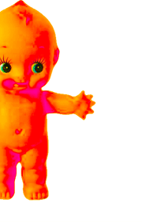
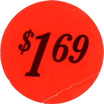
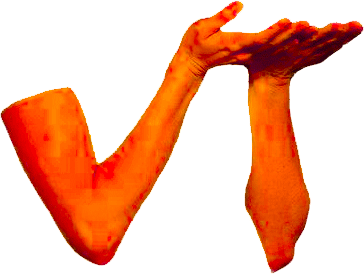
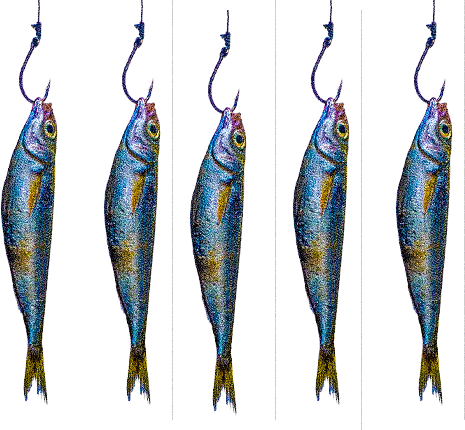
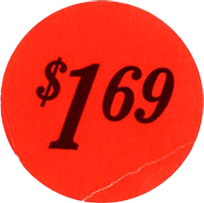
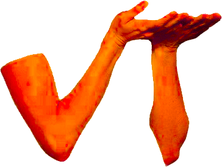
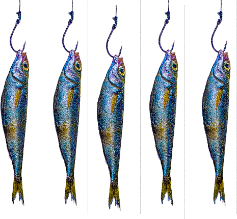

Un vieux poster en collage pas ouf fait pendant un intercours parce que je me sentais pas bien. En vrai vive les poils, moi je trouve que le visuel est puissant, et en pus c'est doux. Voilà, rien de plus. Ciao les losers

COLLAGE COMPONENTS
 




